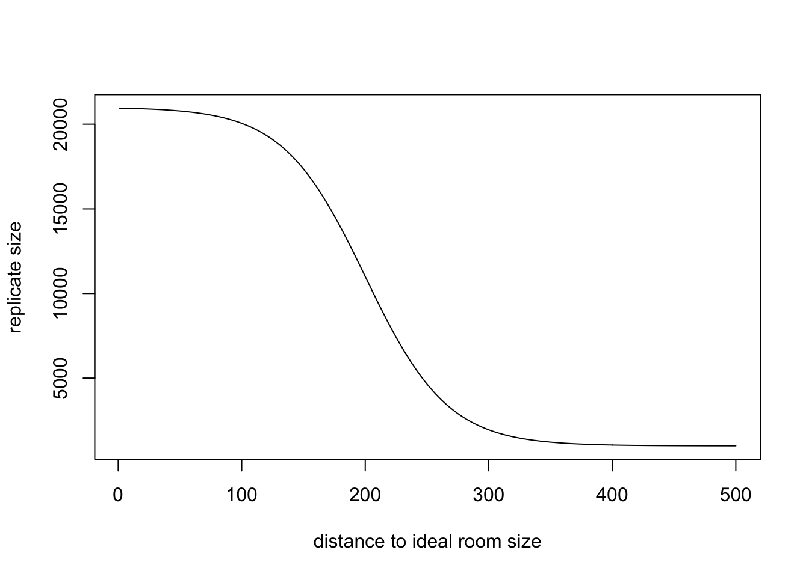

This tiny project comes from the coding class I am taking this semester. The simplest birthday problem is as followed: how many people should be in a room such that the probability of a birthday shared by at least two persons is just above 0.5? I found this problem is very interesting. Throughout the process dealing this problem, some powerful R packages and essential coding skills are incorporated for more efficient simulation. In this project, I will try to address generalized birthday problem from very first approach (easy coding but computer expensive and slow) to somehow more advanced approach.
Here is the outline for this article
Binary search
If I know where I stand is still far away from the target probability, can I apply a larger step, not step-by-step, in order to move quickly? A good way is to employ binary search algorithm. The key concept is to skip unecessary mid-points (in our case, room sizes) for saving computer time. Given a series of n sorted room sizes ranging from lower bound \(L=1\) to upper bound \(R=n\), then the corresponding probability of at least k people sharing the same birthday are \(p_1, p_2, \dots, p_n\)). Our goal is to find the probability of room size that is close and slightly large than 0.5 \(p_t=0.5\). Here is the procedure:
- Set L to 1 and R to n. R would be always larger than L.
- Calculate i (position fo the middle element). Set i to ceiling since the room size should be an integer.
- If \(p_i<p_t\), set L to i + 1 and go to step 2.
- If \(p_i>p_t\), set R to i − 1 and go to step 2.
- Repeat step 2-4 until \(p_i=p_t\), the search is done. m is our answer.
gbp <- function(k=2, p=.5, r=100000, threshold=.001) {
i <- k # Tested room size; start from k persons in a room
x <- 1 # Counter for while loop
L <- 0 # Lower bound for binary search
R <- k^4+100+sample(-k:k, 1) # Upper bound for binary search
# Create an empty data frame for result
result <- setNames(data.frame(matrix(0, 100, 2)), c("room", "p"))
while (abs(result$room[x] - p) >= threshold) {
# Test room size i
i <- ceiling((L+R)/2)
result$room[x] <- i
# Calculate probability
birth <- matrix(sample(1:365, r*i, replace=TRUE), nrow=r, ncol=i)
result$p[x] <- sum(apply(birth, 1, function(x) max(tabulate(x))>=k )) / r
if (result$p[x] >= p) R <- i
if (result$p[x] < p) L <- i
# Break the loop if trapped
if(sum(duplicated(tail(result$room[1:x], 2))) == 1 & result$room[x] != 0) break
# Print out room sizes tested
cat(paste0('Room size tested:', i, '\tprobability:', round(result$p[x], 3), '\n'))
# Counter for steps
x <- x + 1
}
ans <- R
return(list(answer=ans,
result=result[1:x,]))
}
system.time(y<-gbp(k=2, p=.5))## Room size tested:57 probability:0.99
## Room size tested:29 probability:0.682
## Room size tested:15 probability:0.251
## Room size tested:22 probability:0.476
## Room size tested:26 probability:0.598
## Room size tested:24 probability:0.538
## Room size tested:23 probability:0.509## user system elapsed
## 4.450 0.249 5.043Yes, I set the final \(R\) as answer. The reason why \(R\) is the correct answer rather than \(L\) is because in the binary search algorithm, the middle point is always set to ceiling. If you set the middle point to floor, it is also true that \(R\) is the right answer, because we want the simulated probability a bit above target probability.
y## $answer
## [1] 23
##
## $result
## room p
## 1 114 0.00000
## 2 57 0.98982
## 3 29 0.68201
## 4 15 0.25094
## 5 22 0.47575
## 6 26 0.59825
## 7 24 0.53800
## 8 23 0.50932
## 9 23 0.50665Replicate size
Same logic can be applied to replicate size. We only need to increase replicates size when close to the target probability. If we know there are still hundreds of rooms size between current roome size and ideal room size, simulating a room size for millions times seems to be bad idea. As we are getting closer to the ideal room size, accuracy becomes more and more important. Accuracy may not be a big deal when k is 2 or 3, since the ideal room size is small. However, for larger k, for example, 8, then the efficiency become important for the first few steps.
To gradually increase replicate size, a sigmoidal curve might be a good idea.
B_l <- 1000
B_u <- 20000
x <- 1:500
y <- floor(-B_u/(1+exp(-.03* (x-200))))+(B_u+B_l)
plot(x, y, type='l', xlab='distance to ideal room size', ylab='replicate size')
When we are approximately 400 persons away the ideal room size, just do 1000 replicate. Whereas almost being to the goal, try 20000 replicates. Then the function can be modified as followed.
gbp <- function(k=2, p=.5, B_l=1000, B_u=20000, threshold=.001) {
i <- k # Tested room size; start from k persons in a room
x <- 1 # Counter for while loop
L <- 0 # Lower bound for binary search
R <- k^4+100+sample(-k:k, 1) # Upper bound for binary search
# Create an empty data frame for result
result <- setNames(data.frame(matrix(0, 100, 3)), c("room", "p", "replicate"))
while (abs(result$room[x] - p) >= threshold) {
# Increase replicate when approaching target room size
r <- floor(-B_u/(1+exp(-.03* ((R-L)-200))))+(B_u+B_l)
result$replicate[x] <- r
# Test room size i
i <- ceiling((L+R)/2)
result$room[x] <- i
# Calculate probability
birth <- matrix(sample(1:365, r*i, replace=TRUE), nrow=r, ncol=i)
result$p[x] <- sum(apply(birth, 1, function(x) max(tabulate(x))>=k )) / r
if (result$p[x] >= p) R <- i
if (result$p[x] < p) L <- i
# Break the loop if trapped
if(sum(duplicated(tail(result$room[1:x], 2))) == 1 & result$room[x] != 0) break
# Print out room sizes tested
cat(paste0('Room size tested:', i, '\tprobability:', round(result$p[x], 3), '\treplicate size: ', r, '\n'))
# Counter for steps
x <- x + 1
}
ans <- R
return(list(answer=ans,
result=result[1:x,]))
}
system.time(y<-gbp(k=8, p=.5))## Room size tested:2098 probability:1 replicate size: 1000
## Room size tested:1049 probability:0.97 replicate size: 1000
## Room size tested:525 probability:0.049 replicate size: 1000
## Room size tested:787 probability:0.49 replicate size: 1001
## Room size tested:918 probability:0.81 replicate size: 3694
## Room size tested:853 probability:0.643 replicate size: 18759
## Room size tested:820 probability:0.562 replicate size: 20647
## Room size tested:804 probability:0.515 replicate size: 20867
## Room size tested:796 probability:0.497 replicate size: 20917
## Room size tested:800 probability:0.505 replicate size: 20937
## Room size tested:798 probability:0.501 replicate size: 20944
## Room size tested:797 probability:0.497 replicate size: 20947
## Room size tested:798 probability:0.5 replicate size: 20949## user system elapsed
## 6.357 1.024 7.704y## $answer
## [1] 23
##
## $result
## room p replicate
## 1 116 0.0000000 0
## 2 58 0.9880000 1000
## 3 29 0.6809149 20985
## 4 15 0.2538821 20994
## 5 22 0.4782816 20996
## 6 26 0.5960183 20996
## 7 24 0.5389818 20997
## 8 23 0.5041196 20997
## 9 23 0.5096442 0